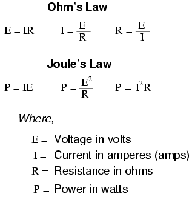
NOTE: the symbol "V" ("U" in Europe) is sometimes used to represent voltage instead of "E". In some cases, an author or circuit designer may choose to exclusively use "V" for voltage, never using the symbol "E." Other times the two symbols are used interchangeably, or "E" is used to represent voltage from a power source while "V" is used to represent voltage across a load (voltage "drop").
"The algebraic sum of all voltages in a loop must equal zero."
Kirchhoff's Voltage Law (KVL)
"The algebraic sum of all currents entering and exiting a node must equal zero."
Kirchhoff's Current Law (KCL)
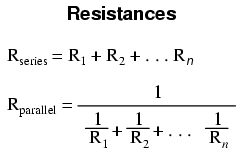
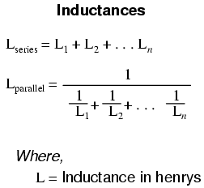
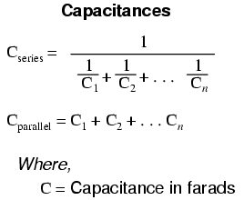
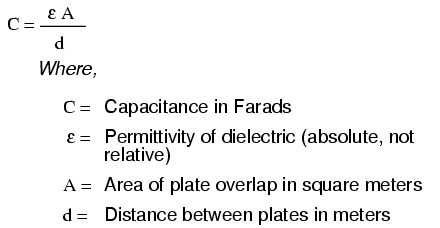
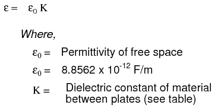
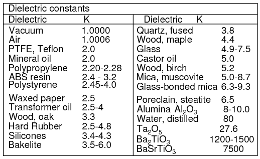
A formula for capacitance in picofarads using practical dimensions:
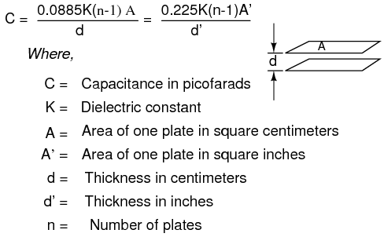
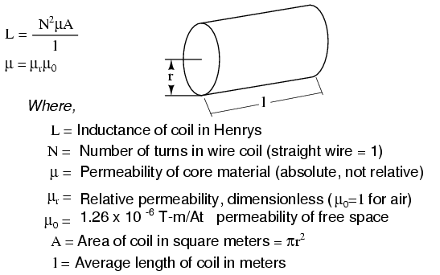
Wheeler's formulas for inductance of air core coils which follow are useful for radio frequency inductors. The following formula for the inductance of a single layer air core solenoid coil is accurate to approximately 1% for 2r/l < 3. The thick coil formula is 1% accurate when the denominator terms are approximately equal. Wheeler's spiral formula is 1% accurate for c>0.2r. While this is a "round wire" formula, it may still be applicable to printed circuit spiral inductors at reduced accuracy.
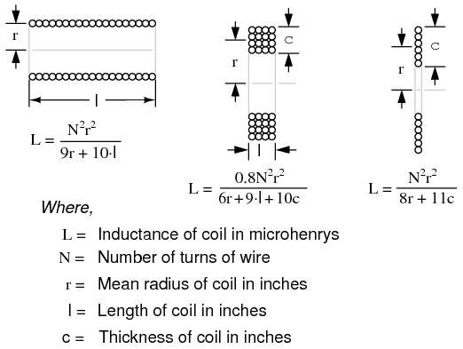
The inductance in henries of a square printed circuit inductor is given by two formulas where p=q, and p≠q.
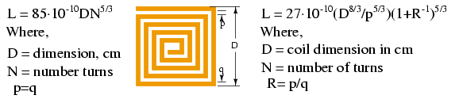
The wire table provides "turns per inch" for enamel magnet wire for use with the inductance formulas for coils. The circular-mil cross-section area determines current carrying capacity of wires.
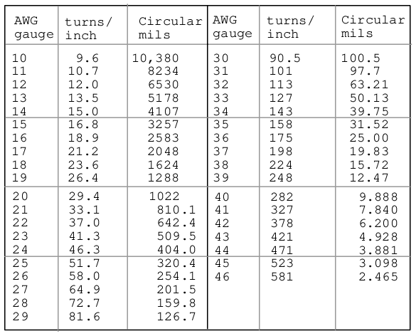
Time constant in seconds = RC
Time constant in seconds = L/R
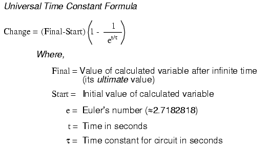

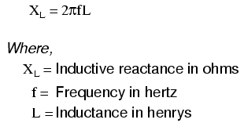
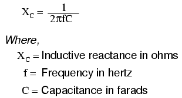
ZL = R + jXL
ZC = R - jXC
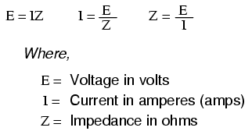
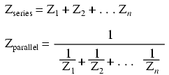
NOTE: All impedances must be calculated in complex number form for these equations to work.
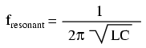
NOTE: This equation applies to a non-resistive LC circuit. In circuits containing resistance as well as inductance and capacitance, this equation applies only to series configurations and to parallel configurations where R is very small.
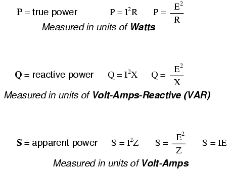
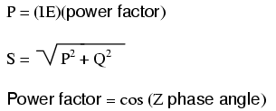
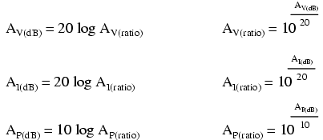
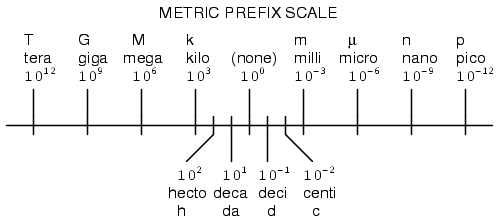
Conversion equivalencies for volume
1 US gallon (gal) = 231.0 cubic inches (in3) = 4 quarts (qt) = 8 pints (pt) = 128 fluid ounces (fl. oz.) = 3.7854 liters (l)
1 Imperial gallon (gal) = 160 fluid ounces (fl. oz.) = 4.546 liters (l)
Conversion equivalencies for distance
1 inch (in) = 2.540000 centimeter (cm)
Conversion equivalencies for velocity
1 mile per hour (mi/h) = 88 feet per minute (ft/m) = 1.46667 feet per second (ft/s) = 1.60934 kilometer per hour (km/h) = 0.44704 meter per second (m/s) = 0.868976 knot (knot -- international)
Conversion equivalencies for weight
1 pound (lb) = 16 ounces (oz) = 0.45359 kilogram (kg)
Conversion equivalencies for force
1 pound-force (lbf) = 4.44822 newton (N)
Acceleration of gravity (free fall), Earth standard
9.806650 meters per second per second (m/s2) = 32.1740 feet per second per second (ft/s2)
Conversion equivalencies for area
1 acre = 43560 square feet (ft2) = 4840 square yards (yd2) = 4046.86 square meters (m2)
Conversion equivalencies for pressure
1 pound per square inch (psi) = 2.03603 inches of mercury (in. Hg) = 27.6807 inches of water (in. W.C.) = 6894.757 pascals (Pa) = 0.0680460 atmospheres (Atm) = 0.0689476 bar (bar)
Conversion equivalencies for energy or work
1 british thermal unit (BTU -- "International Table") = 251.996 calories (cal -- "International Table") = 1055.06 joules (J) = 1055.06 watt-seconds (W-s) = 0.293071 watt-hour (W-hr) = 1.05506 x 1010 ergs (erg) = 778.169 foot-pound-force (ft-lbf)
Conversion equivalencies for power
1 horsepower (hp -- 550 ft-lbf/s) = 745.7 watts (W) = 2544.43 british thermal units per hour (BTU/hr) = 0.0760181 boiler horsepower (hp -- boiler)
Conversion equivalencies for motor torque
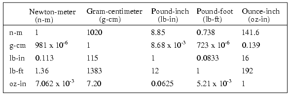
Locate the row corresponding to known unit of torque along the left of the table. Multiply by the factor under the column for the desired units. For example, to convert 2 oz-in torque to n-m, locate oz-in row at table left. Locate 7.062 x 10-3 at intersection of desired n-m units column. Multiply 2 oz-in x (7.062 x 10-3 ) = 14.12 x 10-3 n-m.
Converting between units is easy if you have a set of equivalencies to work with. Suppose we wanted to convert an energy quantity of 2500 calories into watt-hours. What we would need to do is find a set of equivalent figures for those units. In our reference here, we see that 251.996 calories is physically equal to 0.293071 watt hour. To convert from calories into watt-hours, we must form a "unity fraction" with these physically equal figures (a fraction composed of different figures and different units, the numerator and denominator being physically equal to one another), placing the desired unit in the numerator and the initial unit in the denominator, and then multiply our initial value of calories by that fraction.
Since both terms of the "unity fraction" are physically equal to one another, the fraction as a whole has a physical value of 1, and so does not change the true value of any figure when multiplied by it. When units are canceled, however, there will be a change in units. For example, 2500 calories multiplied by the unity fraction of (0.293071 w-hr / 251.996 cal) = 2.9075 watt-hours.
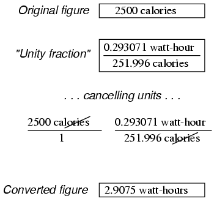
The "unity fraction" approach to unit conversion may be extended beyond single steps. Suppose we wanted to convert a fluid flow measurement of 175 gallons per hour into liters per day. We have two units to convert here: gallons into liters, and hours into days. Remember that the word "per" in mathematics means "divided by," so our initial figure of 175 gallons per hour means 175 gallons divided by hours. Expressing our original figure as such a fraction, we multiply it by the necessary unity fractions to convert gallons to liters (3.7854 liters = 1 gallon), and hours to days (1 day = 24 hours). The units must be arranged in the unity fraction in such a way that undesired units cancel each other out above and below fraction bars. For this problem it means using a gallons-to-liters unity fraction of (3.7854 liters / 1 gallon) and a hours-to-days unity fraction of (24 hours / 1 day):
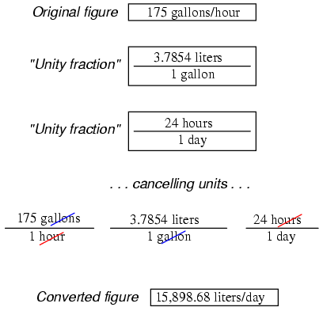
Our final (converted) answer is 15898.68 liters per day.
Conversion factors were found in the 78th edition of the CRC Handbook of Chemistry and Physics, and the 3rd edition of Bela Liptak's Instrument Engineers' Handbook -- Process Measurement and Analysis.
Contributors to this chapter are listed in chronological order of their contributions, from most recent to first. See Appendix 2 (Contributor List) for dates and contact information.
Gerald Gardner (January 2003): Addition of Imperial gallons conversion.
Lessons In Electric Circuits copyright (C) 2000-2023 Tony R. Kuphaldt, under the terms and conditions of the CC BY License.